Două casete și o cafea. Tot ce ai de completat în Jurnalul AI
Am scris data trecută despre de ce ai nevoie de un obicei, nu de încă un curs. Acum e rândul uneltei. Jurnalul AI e un singur fișier pe care îl descarci, îl pui pe desktop și îl deschizi cu dublu-click. Nu are cont, nu are abonament, nu trimite nimic nicăieri. Iar tot ce îți cere, zi de zi, încape în două casete de text. Hai să le vedem pe rând, cu capturi din aplicație.
Jurnalul AI e explicat în trei articole care se citesc cel mai bine în ordine: primul spune de ce ai nevoie de un obicei, nu de încă un curs, al doilea arată unealta pe dinăuntru, al treilea se ocupă de siguranța fișierului pe care îl descarci. Se pot citi și separat, dar dacă ai ajuns direct aici, cel mai bine e să începi cu primul.
- Obiceiul nu se construiește. Se lipește începe aici
- Două casete și o cafea. Tot ce ai de completat în Jurnalul AI ești aici
- Descarci un fișier HTML. Ce poate face, ce nu poate și cum verifici
// Cuprins
Am avut și o variantă de telefon și am renunțat la ea deliberat. Nu din lipsă de timp, ci pentru că pe telefon distragerile sunt la un deget distanță: notificarea care intră fix când scrii notița, aplicația deschisă „doar o secundă”, cele zece minute care se transformă în două. Jurnalul are nevoie de exact opusul, un moment scurt și liniștit, lipit de prima cafea.
Prima deschidere
Descarci fișierul din secțiunea Resurse, îl pui pe desktop și dai dublu-click. Se deschide în browserul tău obișnuit, ca orice pagină, doar că nu e pe internet, e la tine pe calculator. Asta vezi:
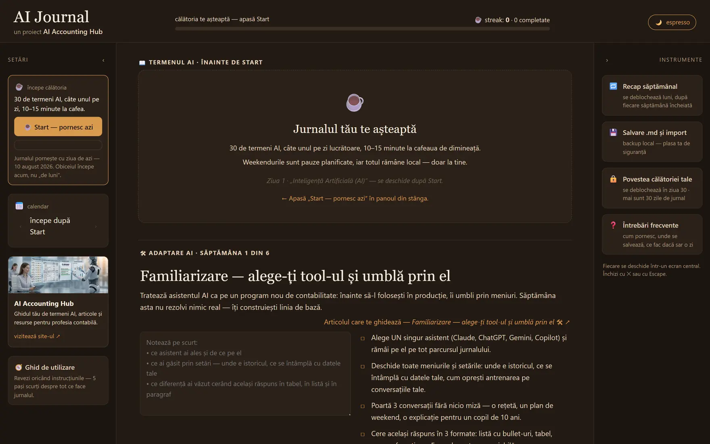
Sub butonul de Start scrie data de azi, nu una pe care o alegi tu. Jurnalul pornește cu ziua curentă și atât. Singura abatere e weekendul: dacă îl deschizi sâmbăta sau duminica, apar două butoane în loc de unul, fiindcă se lucrează în zilele lucrătoare. Preiei termenul de vineri și începi imediat, sau aștepți până luni. În ambele cazuri weekendul rămâne pauză și nu te lasă blocat în fața unui ecran gol.
Două teme, un comutator
Butonul din colțul dreapta-sus schimbă tema. Aceleași informații, două atmosfere. Alegi ce nu-ți obosește ochii la ora la care lucrezi.
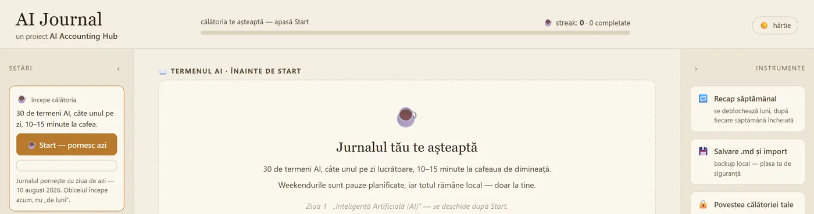
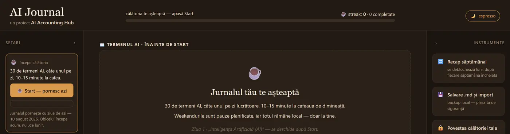
Ghidul de bun venit
La prima deschidere nu trebuie să cauți nimic: ghidul apare singur, peste ecranul de pornire. Îl poți parcurge atunci sau îl poți redeschide oricând din panoul stâng, de la 🧭 Ghid de utilizare. Nu e genul de tur care apare o dată și dispare pentru totdeauna.
Start — pornești cu ziua de azi
Butonul de Start nu îți cere nimic. Nicio configurare, nicio alegere, niciun formular. Apeși și ai început.
Asta e o decizie luată deliberat. Orice ecran de configurare pus înaintea primei zile devine, în practică, un motiv de amânare: te uiți la opțiuni, îți spui că te gândești mai bine diseară, și gata. Jurnalul pornește cu ziua de azi, pentru că un obicei începe acum, nu „de luni”.
Singura configurare din jurnal e absența ei.
Ritmul e fix: un termen pe zi lucrătoare, 30 de termeni, 30 de zile, șase săptămâni. Nu e o limitare, e ideea. Un obicei se construiește din repetare, nu din viteză. Weekendurile sunt pauze planificate, iar șirul de zile consecutive nu se rupe sâmbăta și duminica.
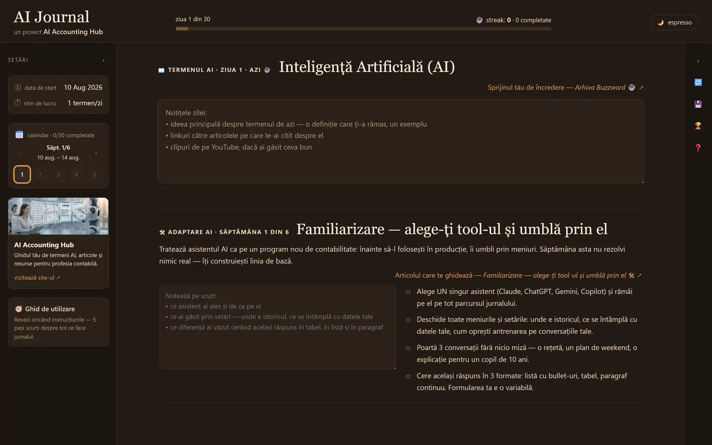
Scrisoarea către tine
În prima zi, și doar în prima zi, apare o casetă în plus. O singură întrebare: ce speri să știi, sau să poți face, peste 30 de termeni?
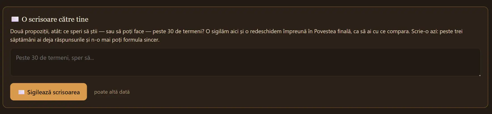
E singurul lucru din jurnal care nu se poate recupera mai târziu. Nu pentru că ar bloca ceva, ci pentru că își pierde rostul: o scrisoare despre ce speri are valoare doar dacă e scrisă înainte să știi cum e drumul. După trei săptămâni ai deja răspunsurile și n-o mai poți formula sincer.
Poți să o amâni, sigur. Dar rămâne o zi în care ai fi putut avea un „înainte”.
Caseta 1 — notițele zilei
Aici e miezul. În fiecare zi lucrătoare primești un termen AI. Îl documentezi în Buzzword, linkul e chiar deasupra casetei și se deschide într-un tab nou, apoi scrii aici ce ai reținut.
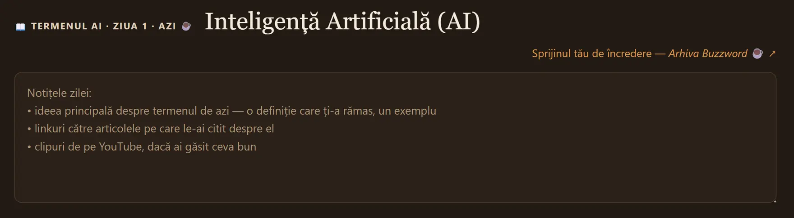
Cele trei rânduri îți spun exact ce se așteaptă de la tine:
- Ideea principală despre termenul de azi: o definiție care ți-a rămas, un exemplu. Cu cuvintele tale, nu copiată.
- Linkuri către articolele pe care le-ai citit. Aici se duce teancul de bookmark-uri, în sfârșit într-un loc unde îl vei regăsi.
- Clipuri de pe YouTube, dacă ai găsit ceva bun.
Nu e nevoie de mai mult de patru sau cinci rânduri. Serios. Dacă scrii mai mult, cu atât mai bine, dar pragul de intrare trebuie să rămână ridicol de jos, altfel îl sari într-o zi aglomerată. Iar o zi sărită e mult mai scumpă decât o notiță scurtă.
Nu există buton de salvare. Scrii, iar sub casetă apare pentru o clipă „se salvează…”, apoi „salvat local ✓”. Atât. Poți închide fișierul în orice moment.
Caseta 2 — adaptarea săptămânii
Sub termenul zilei e a doua casetă. Nu se schimbă zilnic, ci o dată pe săptămână, și are alt rost: acolo unde prima îți construiește vocabularul, a doua te pune să faci ceva cu el.
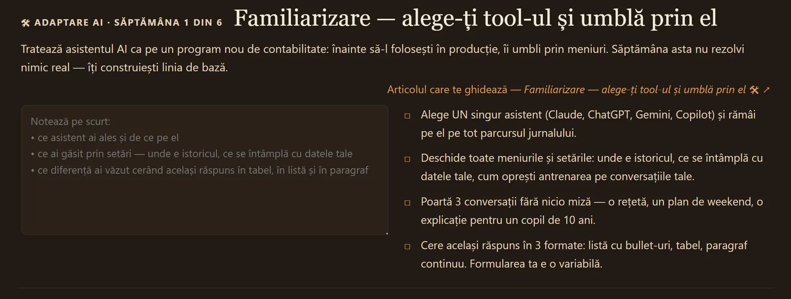
Fiecare dintre cele șase săptămâni are propriul articol pe hub, care desface activitatea pas cu pas. Nu trebuie să-l citești ca să lucrezi, pașii din dreapta sunt suficienți, dar e acolo dacă vrei contextul întreg.
De ce a doua poate rămâne goală
Și acum partea care merită spusă explicit, pentru că altfel pare o scăpare.
Ține ritmul. Ea colorează bara de progres, ea alimentează șirul de zile consecutive, ea marchează ziua ca încheiată în calendar.
De completat în fiecare zi lucrătoare. Cinci rânduri ajung.
Ține practica. Se salvează separat, pe săptămână, și nu influențează progresul, procentul sau șirul de zile.
Dacă o săptămână e imposibilă și rămâne goală, nu se rupe nimic.
Asta nu e o omisiune. E aceeași logică despre care am scris în articolul precedent: stratul zilnic trebuie să rămână subțire, altfel ancora cedează. Dacă ți-am fi condiționat ziua de a fi făcut și exercițiul practic, în prima săptămână cu termen de depunere ai fi ratat amândouă. Iar odată ce bara arată o zi ruptă, motivul de a reveni scade brutal.
Notarea zilnică e obligația ușoară. Practica săptămânală e invitația. Nu le punem pe același cântar.
În practică, majoritatea oamenilor completează caseta a doua în două sau trei reprize pe parcursul săptămânii, pe măsură ce apucă să încerce pașii. Nu dintr-o singură ședință.
Cum îți arată unde ești
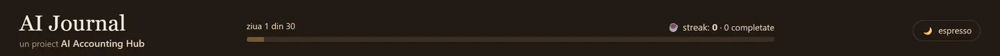
Bara nu e o decorațiune. Fiecare zi completată colorează un segment, iar o zi sărită lasă un gol vizibil. E traducerea directă a regulii „nu rata de două ori”: vezi golul înainte să apuci să-l transformi în două goluri.
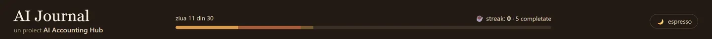
Lângă ea, contorul de zile consecutive. Iar în panoul stâng, un calendar pe săptămâni, unde poți naviga înapoi și înainte, poți redeschide o zi anterioară ca să-ți completezi notița și poți vedea dintr-o privire câte zile ai încheiat.
Cel mai simplu e să se vadă. În clipul de mai jos e un tur complet: calendarul, trecerea de la o zi la alta, panourile care se retrag și se desfac, și ferestrele instrumentelor deschise pe rând.
Când lipsești mai mult de trei zile
Aici e cea mai nouă piesă din jurnal, și cea care spune cel mai mult despre cum e gândit.
Nu există buton de pauză. Nu e o scăpare, e o alegere: un buton de pauză apăsat din timp se transformă în amânare, iar amânarea e exact lucrul împotriva căruia lucrează tot restul aplicației. Așa că jurnalul nu îți cere să anunți nimic dinainte. Te așteaptă, oricât ar dura.
În schimb, își dă seama singur la revenire. Dacă în urmă au rămas cel puțin trei zile lucrătoare consecutive necompletate, la redeschiderea fișierului se deschide o casetă și te întreabă cum vrei să reiei.
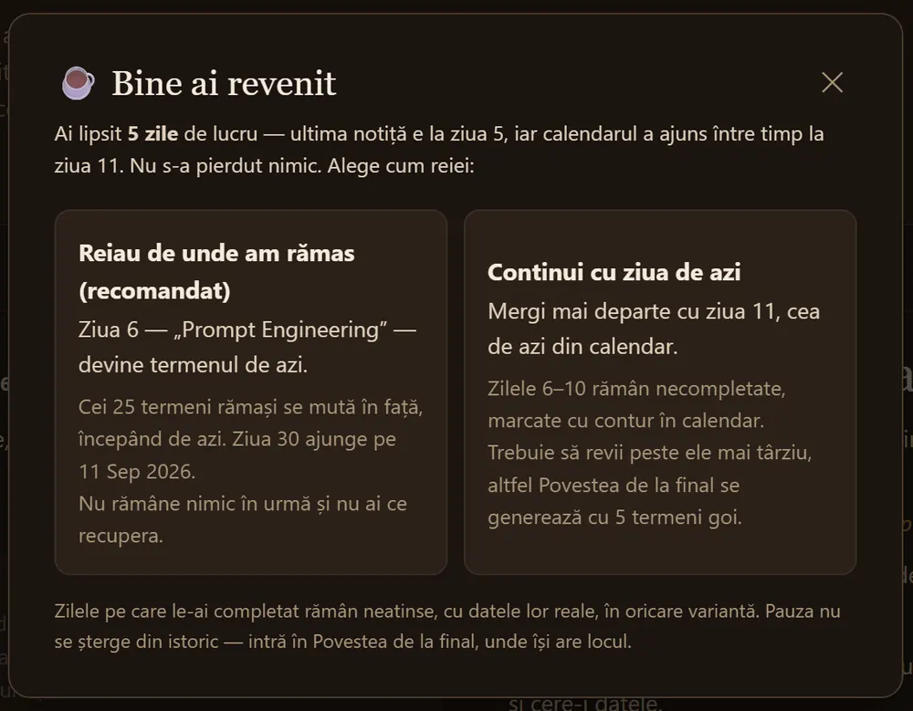
Cele două variante nu sunt „bine” și „rău”, sunt două feluri de a socoti timpul:
- Reiau de unde am rămas, varianta recomandată. Termenul la care rămăseseși devine termenul de azi, iar toți termenii care urmează se mută în față. Nu rămâne nimic de recuperat, iar parcursul se termină mai târziu cu exact atâtea zile câte ai lipsit. Jurnalul îți spune chiar în casetă pe ce dată ajunge ziua 30.
- Continui cu ziua de azi. Mergi mai departe cu ziua din calendar, iar zilele din perioada absenței rămân marcate cu contur, ca de recuperat. Trebuie să revii peste ele mai târziu, altfel Povestea de la final se generează cu termeni goi.
În ambele cazuri, zilele pe care le-ai completat deja rămân neatinse, cu textul tău real. Nimic nu se șterge și nimic nu se rescrie.
Efectul se vede și în caseta a doua. Dacă pauza a căzut peste o activitate săptămânală, deasupra ei apare un rând care recunoaște situația și îți scade pretențiile: activitatea a fost întreruptă, scrie ce ai apucat să faci, nu e nevoie să reiei tot.
Pauza nu e un eșec și nu are nevoie de scuze. E ce se întâmplă într-un parcurs de șase săptămâni.
Un detaliu practic: dacă alegi „continui cu ziua de azi”, jurnalul nu te mai bate la cap cu aceeași pauză. Dar dacă lipsești din nou, mai târziu, te întreabă din nou pentru noua absență.
Instrumentele din dreapta
Patru. Fiecare se deschide într-o fereastră centrală, peste ecranul de lucru, și se închide cu ✕ sau cu Escape. Două sunt disponibile din prima zi, două stau blocate și îți spun singure când se deschid.
Pe ecrane mici, sau când vrei mai mult spațiu de scris, ambele panouri laterale se retrag în bare subțiri de pictograme. Le redeschizi din săgeata de pe margine.
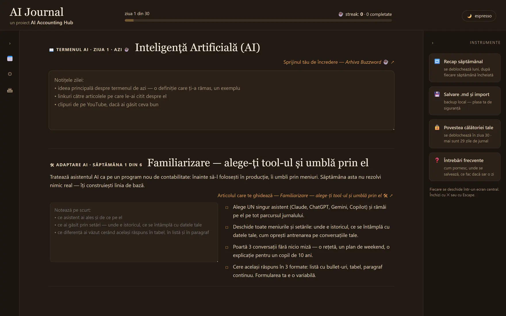
🔁 Recap săptămânal — și mini-quizul
Se deblochează lunea, după fiecare săptămână încheiată. Îl deschizi și ai, într-un singur ecran, cele cinci zile ale săptămânii trecute: termenul fiecărei zile și notița pe care ai scris-o tu. Dacă o zi a rămas goală, ți-o spune și te trimite în calendar să o recuperezi.
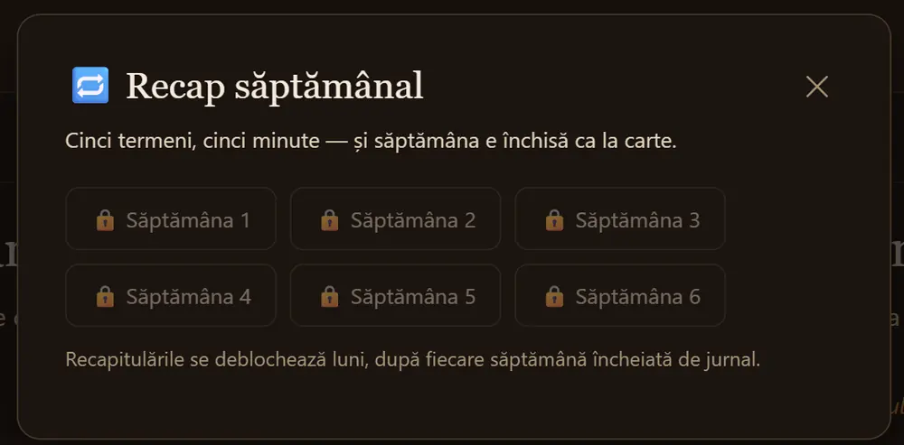
La capătul fiecărei recapitulări e partea care contează cel mai mult: un mini-quiz de cinci întrebări, câte una pentru fiecare termen al săptămânii. Trei variante de răspuns, o singură încercare per întrebare. Ordinea variantelor e amestecată, ca să nu memorezi poziția răspunsului corect în loc de răspuns.
Nu ai punctaj și nu ai miză. Nu se raportează nimic nicăieri, nu blochează nimic dacă greșești, nu-ți colorează bara în roșu. Vezi doar la câte ai răspuns și câte au fost corecte.
Rostul lui e altul, și e cel mai bine documentat mecanism din tot ce ține de învățare: o informație pe care ai scos-o din memorie o dată se fixează considerabil mai bine decât una pe care ai recitit-o de cinci ori. Recitirea dă senzația de familiaritate; extragerea construiește amintirea. Cinci întrebări la care răspunzi din cap, la o săptămână după ce ai citit termenul, fac mai mult decât o oră de reluat notițe.
Cinci termeni, cinci minute — și săptămâna e închisă ca la carte.
💾 Salvare .md și import — plus butonul de resetare
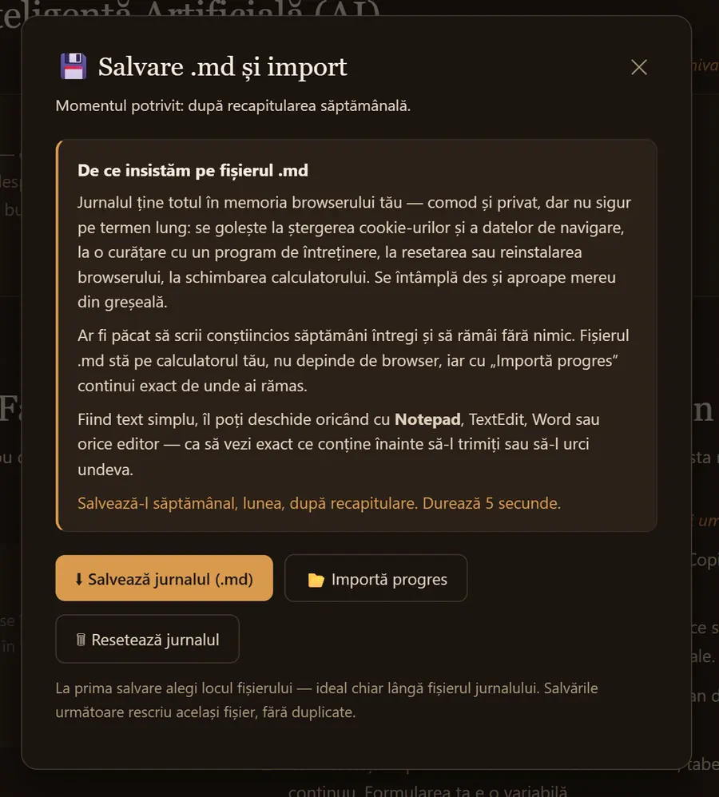
⬇ Salvează jurnalul (.md) descarcă tot ce ai scris ca fișier text simplu. La prima salvare alegi unde îl pui, ideal chiar lângă fișierul jurnalului. Salvările următoare rescriu același fișier, fără să-ți umple folderul de duplicate.
📂 Importă progres face drumul invers: alegi fișierul .md și continui exact de unde ai rămas. Ăsta e mecanismul prin care muți jurnalul pe alt calculator, sau prin care revii dacă browserul și-a golit memoria.
🗑 Resetează jurnalul șterge tot ce e salvat local și te duce înapoi la ecranul dinainte de Start. E acolo pentru două situații reale: ai umblat prin jurnal ca să vezi cum arată și vrei să pornești curat abia acum, sau vrei pur și simplu să reiei călătoria de la capăt.
❓ Întrebări frecvente
Nu e un text de complezență. Sunt întrebările pe care le-am primit efectiv, cu răspunsuri scurte.
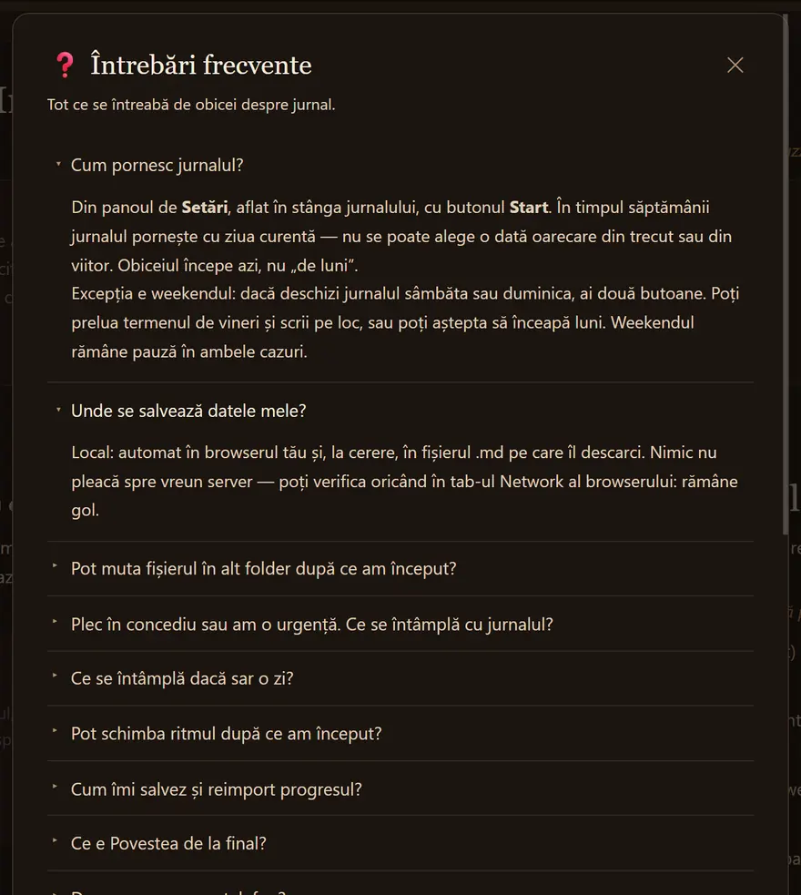
- Cum pornesc jurnalul? Din panoul de Setări, cu butonul Start. Nu se poate alege o dată din trecut sau din viitor, pornește cu ziua curentă. Excepția e weekendul, când ai două butoane: preiei termenul de vineri sau aștepți luni.
- Unde se salvează datele mele? Local, în browserul tău și, la cerere, în fișierul .md. Nimic nu pleacă spre vreun server, poți verifica singur în tabul Network al browserului: rămâne gol.
- Pot muta fișierul în alt folder după ce am început? În Chrome și Edge, da. Acolo browserul leagă datele de „fișier local” în general, nu de locul exact în care stă fișierul. Consecința firească a aceleiași reguli: două copii ale jurnalului pe același calculator folosesc aceleași date, deci nu poți ține două jurnale separate copiind pur și simplu fișierul.
- Plec în concediu sau am o urgență. Ce se întâmplă cu jurnalul? Exact ce am descris mai sus: te așteaptă, iar la revenire te întreabă cum reiei.
- Ce se întâmplă dacă sar o zi?
- Pot schimba ritmul după ce am început? O singură dată, și nu de la început. Primele 15 zile merg obligatoriu în ritm de un termen pe zi, acolo se formează obiceiul. Din ziua 16 jurnalul te întreabă o dată dacă vrei să treci la doi termeni pe zi, iar alegerea de acolo rămâne definitivă până la ultima zi.
- Cum îmi salvez și reimport progresul?
Iar dacă nu găsești răspunsul acolo, fereastra te trimite la pagina de contact. Întrebările primite modelează versiunile următoare ale jurnalului, deci chiar merită trimise.
🏆 Al patrulea stă blocat
Povestea călătoriei tale e singurul instrument care nu se deschide când vrei tu. Îți spune, din prima zi, câte zile mai sunt până la el. Despre ce se întâmplă acolo, în secțiunea următoare.
Datele rămân la tine
Nimic din ce scrii nu pleacă nicăieri. Jurnalul funcționează complet offline, iar textul se salvează în memoria browserului tău.
Comod și privat, dar nu sigur pe termen lung. Memoria browserului se golește la ștergerea cookie-urilor și a datelor de navigare, la o curățare cu un program de întreținere, la reinstalarea browserului, la schimbarea calculatorului. Nu reține nimic nici dacă lucrezi în fereastră privată. Se întâmplă des și aproape mereu din greșeală.
De aceea insistăm pe fișierul .md. Îl descarci din instrumentul de salvare, stă pe calculatorul tău, nu depinde de browser, iar cu „Importă progres” continui exact de unde ai rămas. Fiind text simplu, îl poți deschide cu Notepad ca să vezi exact ce conține.
Ce te așteaptă la capăt
Nu stricăm surpriza, așa că spunem doar cât trebuie.
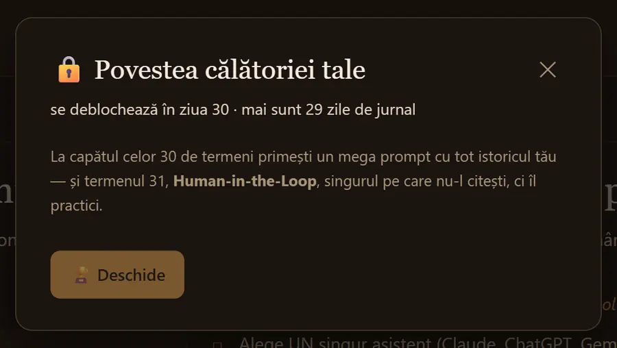
La finalul celor 30 de termeni se deblochează Povestea călătoriei tale. Jurnalul îți pregătește un text lung, construit din tot ce ai scris tu pe parcurs, inclusiv scrisoarea din prima zi, redeschisă lângă ce ai ajuns să știi efectiv. Nu e o diplomă. E o comparație între „înainte” și „după”, scrisă cu propriile tale cuvinte. Iar pauzele, dacă au fost, își au și ele locul acolo.
Termenul 31: Human-in-the-Loop
Ultimul termen din jurnal nu apare în cele 30 de zile. Vine abia la final, și e singurul pe care nu-l citești, ci îl practici.
Human-in-the-Loop, adică omul rămâne în buclă, înseamnă că AI-ul face prima trecere, dar omul rămâne răspunzător de rezultat. Nu e o formulă de politică internă, de pus pe un slide și uitat. E o decizie pe care o iei de fiecare dată, pentru fiecare set de date, înainte să apeși trimite.
Pentru profesia contabilă, conceptul ăsta nu e o subtilitate teoretică. E chiar linia dintre a folosi un instrument și a-ți externaliza răspunderea. Modelul poate scrie o notă explicativă impecabilă, poate corela un cont cu altul, poate rezuma o normă în trei rânduri, dar semnătura de pe raport rămâne a ta, iar în fața unui control nimeni nu acceptă „așa mi-a zis asistentul”. Răspunderea profesională nu se poate delega unui sistem care nu poate fi tras la răspundere.
AI-ul propune. Omul decide și răspunde. Între cele două nu există scurtătură.
Iar aici e partea inteligentă a jurnalului: nu îți explică HITL într-un paragraf, ci te pune exact în situația respectivă. La final ai un fișier cu 30 de zile de notițe personale și ești pe cale să-l dai unui asistent AI. Înainte de a genera orice, jurnalul te oprește și te pune să decizi patru lucruri:
- Ce iese din fișier înainte să-l încarci? Nume de clienți, cifre reale, orice ai scris în grabă într-o zi aglomerată.
- Ce instrument alegi și de ce? Contează unde ajung datele, cine le păstrează și dacă modelul se antrenează pe ele.
- Ce verifici în textul primit înainte să-l publici sau să-l trimiți mai departe?
- Sau decizi că jurnalul e prea personal și rămâne offline. E un răspuns la fel de bun ca celelalte.
Fiecare rubrică din fișier e opțională, iar jurnalul nu trimite nimic nicăieri: pregătește fișierul, îl descarci, îl citești, ștergi din el ce nu vrei să iasă din casă, și abia apoi hotărăști dacă îl duci într-un asistent AI. E ultima decizie a călătoriei și o iei tu, ceea ce e, de fapt, toată ideea.
Cum începi azi
- Descarci fișierul din secțiunea Resurse și îl pui pe desktop, nu într-un folder. Trebuie să-l vezi.
- Îl deschizi și citești ghidul. Se deschide singur. Două minute.
- Apeși Start. Azi, nu de luni.
- Scrii scrisoarea. Două propoziții, cât încă nu știi cum e drumul.
- Îți alegi ancora, momentul din zi de care lipești cele zece minute. Prima cafea funcționează pentru majoritatea.
În ultima parte a seriei ieșim din jurnal și punem pe hârtie lucrurile la care trebuie să fii atent ori de câte ori folosești un fișier HTML descărcat de pe internet: ce poate și ce nu poate face o pagină deschisă local, de unde ai voie s-o iei, ce semne merită verificate înainte de dublu-click și cum îți dai seama singur, în câteva minute și fără să știi programare, că e ce pretinde a fi.